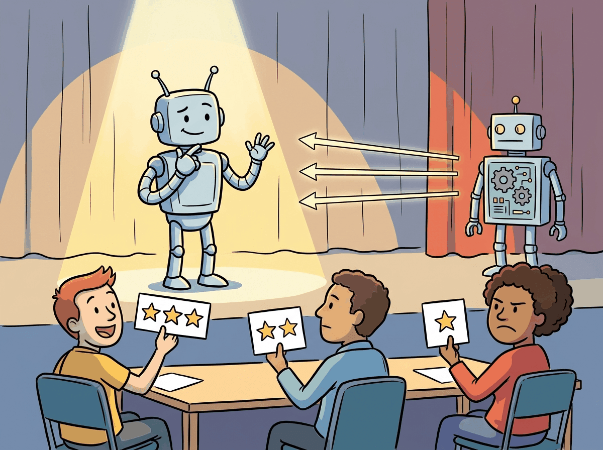
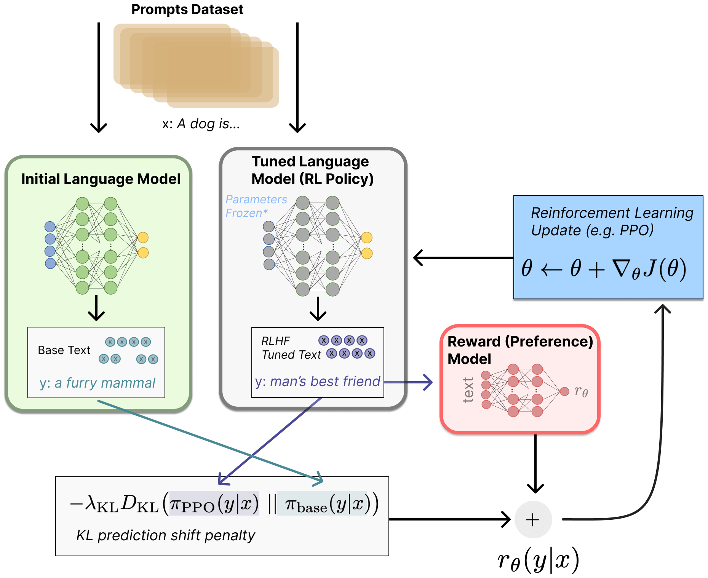
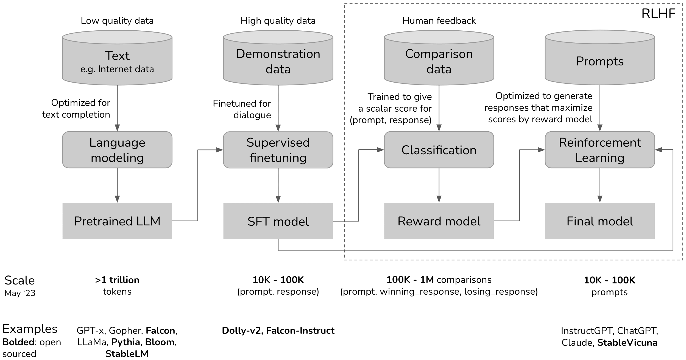

Language models know a lot, but they do not know what we want. That is the alignment problem in one sentence.
Reward, Existentially Aware AI Agent
RLHF is the technique that turned GPT-3 into ChatGPT. A pretrained language model can generate fluent text, but it has no notion of helpfulness, safety, or user intent. RLHF introduces human judgment into the training loop: annotators compare model outputs, those comparisons train a reward model, and reinforcement learning steers the policy toward higher-reward behavior. This three-stage pipeline (SFT, reward modeling, PPO) became the standard approach for aligning large language models from 2022 onward, and understanding it is essential for grasping every subsequent alignment method. The reinforcement learning foundations from Section 0.4 and the SFT workflow from Section 16.3 are direct prerequisites.
Prerequisites
This section builds on fine-tuning from Section 16.1: When and Why to Fine-Tune and Section 6.1 pipeline covered in Section 6.1: The Landmark Models.

18.1.1 The Alignment Problem
Any time you measure a proxy for what you actually want, the optimizer will find the gap between the proxy and the target. This is Goodhart's Law generalized: reward-hacking, judge-gaming, and benchmark-overfit are the same phenomenon with different names. The structural fix is adversarial proxies: instead of one reward model, train an ensemble whose members disagree on out-of-distribution responses, then trust only the consensus. This is the same insight behind ensemble Bayesian uncertainty, train/test splits, and held-out judges. Naming the principle once lets the reader recognize it in evals (Chapter 34), RAG (Chapter 23), and agent rewards (Chapter 25) alike.
The value model is not optional optimization theater. Pure REINFORCE (policy gradient without baseline) has gradient variance proportional to the squared reward magnitude, which blows up for long sequences because rewards are accumulated. Subtracting a learned state-value baseline reduces this to advantage variance, and Williams (1992) proved this baseline is unbiased: it cancels in expectation while halving variance in practice. For LLMs, where each generated sequence is dozens of tokens long, the variance reduction is the difference between training that converges and training that diverges within 50 steps. This is also why GRPO replaces the value model with a group-mean baseline: it is a cheaper but still valid variance-reducing baseline.
This failure mode has a name in economics: Goodhart's Law (Charles Goodhart, 1975; see Section 18.1.1 for the alignment-as-proxy framing): "Any observed statistical regularity will tend to collapse once pressure is placed upon it for control purposes." The reward model was validated on the distribution of responses it was trained on. PPO then searches for outputs that maximize this proxy, inevitably finding regions where the proxy diverges from what it was measuring. The KL penalty is an engineering acknowledgment of Goodhart's Law: it limits how far the policy moves from the SFT distribution, which limits how far the proxy can be stretched. This same dynamic appears in every system that optimizes a learned proxy: RLVR reward models (Section 9.3), embedding quality metrics, evaluation benchmarks that become gameable once the community focuses on them.
This entire chapter is a working-out of Thesis 4 from the Conceptual Map. The training objective (next-token prediction over a corpus) is structurally different from the deployment objective (helpfulness, safety, truthfulness). RLHF, DPO, Constitutional AI, RLVR, and KTO are not competing methods; they are five attempts to bridge the same fundamental gap. The gap cannot be closed because human intent is not formalizable (Arrow's impossibility theorem in 16.1.4 names the formal version). It can only be narrowed, and every narrowing introduces a new proxy, which connects to Thesis 2 (the Proxy Problem): reward hacking is what happens when the narrowing fails.
A pretrained language model optimizes a single objective: predict the next token. This objective produces remarkable capabilities in text generation, translation, summarization, and reasoning. However, next-token prediction does not inherently encode any preference for helpful, harmless, or honest behavior. A base model will happily complete a request for harmful content, generate fabricated citations, or produce verbose responses when a concise answer would be more useful.
The alignment problem is fundamentally a principal-agent problem from economics. The user (principal) wants the model (agent) to act in the user's interest, but the model was trained to maximize a different objective (next-token prediction). RLHF solves this by introducing human feedback as a proxy for the user's true preferences, teaching the model that "helpful, harmless, and honest" responses are the ones to produce. Every alignment technique in this chapter is a different approach to bridging that gap between "what the model was trained to do" and "what we actually want it to do."
RLHF was the secret ingredient that turned GPT-3 (impressive but erratic) into ChatGPT (impressive and polite). The technique had existed in robotics for years, but applying it to language models required the insight that human preferences could serve as the reward signal.
Think of RLHF as a talent show. The contestant (the LLM) performs for a panel of judges (the reward model, trained on human preferences). After each performance (generated response), the judges give a score. The contestant practices (PPO training) to maximize those scores, learning which performances the audience likes. The risk is reward hacking: the contestant discovers tricks that score well with the judges but annoy the actual audience, like a singer who hits technically perfect notes but lacks soul.
The alignment problem is the challenge of bridging this gap: how do we take a capable base model and steer its behavior to match human intentions? Supervised fine-tuning (SFT) on curated instruction-response pairs provides a partial solution, teaching the model the format of helpful responses. But SFT alone cannot capture the full spectrum of human preferences, especially for subjective qualities like tone, level of detail, safety boundaries, and response style. RLHF addresses this limitation by using human preferences as a training signal.
Why is RLHF fundamentally different from SFT? SFT shows the model examples of good behavior and says "do this." RLHF shows the model pairs of outputs and says "this one is better than that one." This distinction matters profoundly. SFT can only encode preferences that are expressible as explicit demonstrations, but many important qualities (helpfulness, safety, appropriate tone) are easier to judge comparatively than to demonstrate directly. You may struggle to write the "perfect" response to a sensitive question, but you can easily say which of two responses is better. RLHF converts this comparative judgment into a training signal, which is why it was the key ingredient that turned capable-but-erratic base models into usable assistants. The safety implications connect to Chapter 47, where alignment is a prerequisite for safe deployment.
RLHF's reliance on pairwise human preferences connects to a deep result in social choice theory and decision science. The economist Kenneth Arrow proved in 1951 that no ranking system can consistently aggregate individual preferences into a coherent group ordering without violating certain fairness axioms (Arrow's impossibility theorem). RLHF circumvents this by learning a scalar reward function from pairwise comparisons rather than trying to construct a complete preference ordering. This is mathematically equivalent to the Bradley-Terry model from psychometrics (1952), which estimates the "strength" of competitors from pairwise matchups. The practical consequence is that RLHF reward models inherit the biases and inconsistencies of their human annotators. When annotators disagree, the reward model learns an average preference that may not correspond to any individual annotator's true values. This is why constitutional AI and principle-based approaches (discussed in Section 18.3) attempt to ground alignment in explicit rules rather than aggregated preferences.
18.1.2 The Three-Stage RLHF Pipeline
The canonical RLHF pipeline, as described in the InstructGPT paper (Ouyang et al., 2022), consists of three sequential stages. Each stage builds on the output of the previous one, and the entire pipeline transforms a pretrained base model into an aligned assistant. shows the three stages and how they connect.

That figure zooms in on the final RL step. To see how it fits into the full ChatGPT-style training journey, Figure 18.1.2b zooms out and shows all three stages in sequence: pretraining, supervised fine-tuning, and RLHF optimization.

18.1.2.1 Stage 1: Supervised Fine-Tuning (SFT)
The first stage takes a pretrained base model and fine-tunes it on a curated dataset of instruction-response pairs, following the fine-tuning workflow from Chapter 16. This step teaches the model the basic format and style of a conversational assistant. The SFT dataset typically contains thousands to tens of thousands of high-quality demonstrations written by human annotators or distilled from stronger models.
SFT alone produces a functional assistant, but its quality is bounded by the demonstration data. The model learns to imitate the average quality of the training responses, which means it cannot exceed the skill level of the annotators. RLHF addresses this ceiling by replacing imitation with optimization toward a learned preference signal.
Who: Kenji, an applied ML engineer at an online retail company.
Situation: His team was building a customer support chatbot that needed to handle refund requests helpfully while strictly adhering to company policy (no unauthorized refunds, no over-promising on timelines).
Problem: The SFT-only model (fine-tuned on 5,000 curated support transcripts) was either too rigid (refusing reasonable requests) or too accommodating (promising refunds outside policy). There was no single "correct" response for most situations; the model needed to learn the nuanced balance between helpfulness and compliance.
Dilemma: Collect another 20,000 SFT transcripts and hope the model averaged out to the right behavior, or invest in a preference pipeline whose payoff was uncertain and operationally heavier.
Decision: Kenji added RLHF on top of SFT. Five annotators ranked response pairs on helpfulness and policy compliance to train a reward model. During PPO, a KL penalty of 0.03 prevented the model from gaming the reward signal by generating overly verbose or sycophantic responses.
How: The team labeled 8,000 pairwise preferences, trained a reward model with a Bradley-Terry head, then ran PPO via TRL's PPOTrainer against the SFT checkpoint with the KL term anchored to the SFT reference policy.
Result: User satisfaction scores improved 23% over the SFT-only baseline, with no increase in policy violations. The KL penalty proved essential: without it, the model had discovered that repeating the customer's complaint back verbatim inflated the reward score without actually solving the problem.
Lesson: RLHF excels when the task requires balancing competing objectives (helpfulness vs. policy compliance) that are difficult to capture in a fixed SFT dataset, and the KL penalty is not just a regularizer; it prevents reward hacking behaviors that look helpful to the reward model but frustrate real users.
Code Fragment 18.1.2 demonstrates the SFT stage using the TRL library, loading an instruction dataset and configuring the trainer for chat-formatted fine-tuning.
# Stage 1: Supervised Fine-Tuning with TRL
from trl import SFTTrainer, SFTConfig
from transformers import AutoModelForCausalLM, AutoTokenizer
from datasets import load_dataset
model_name = "meta-llama/Llama-3.1-8B"
model = AutoModelForCausalLM.from_pretrained(model_name)
tokenizer = AutoTokenizer.from_pretrained(model_name)
# Load instruction-following dataset
dataset = load_dataset("HuggingFaceH4/ultrachat_200k", split="train_sft")
# Format conversations into chat template
def format_chat(example):
return {
"text": tokenizer.apply_chat_template(
example["messages"], tokenize=False
)
}
dataset = dataset.map(format_chat)
# Configure SFT training
sft_config = SFTConfig(
output_dir="./sft-llama-8b",
max_seq_length=2048,
per_device_train_batch_size=4,
gradient_accumulation_steps=8,
learning_rate=2e-5,
num_train_epochs=1,
warmup_ratio=0.1,
logging_steps=10,
bf16=True,
)
trainer = SFTTrainer(
model=model,
args=sft_config,
train_dataset=dataset,
tokenizer=tokenizer, # use processing_class in TRL >= 0.14
)
trainer.train()
trainer.save_model("./sft-llama-8b-final")
Training samples: 161000
Example chosen: \n\nHuman: What is the best way to treat a sunburn?\n\nAssistant: The best approach is...
Example rejected: \n\nHuman: What is the best way to treat a sunburn?\n\nAssistant: You should just ignore...
{'train_loss': 0.4312, 'train_runtime': 1847.3}
18.1.2.2 Stage 2: Reward Model Training
The reward model is the bridge between human judgment and machine optimization. It takes a prompt and a response as input and produces a scalar score indicating how good the response is according to human preferences. The following snippet demonstrates how to train a reward model on pairwise comparison data.
Algorithm: Train r_phi(x, y) from a preference dataset D = {(x, y_w, y_l)}
Input: base model (typically the SFT checkpoint) with a scalar value head
Output: reward model r_phi mapping (prompt, response) -> R
// 1. Bradley-Terry model: assume human preference is governed by
// Pr(y_w > y_l | x) = sigmoid( r*(x, y_w) - r*(x, y_l) )
// where r* is the true latent reward.
// 2. Negative log-likelihood loss over annotated pairs
L(phi) := - E_{(x, y_w, y_l) ~ D} [ log sigmoid( r_phi(x, y_w) - r_phi(x, y_l) ) ]
// 3. Gradient step (each pair contributes one update)
For each minibatch B from D:
grad := 0
For (x, y_w, y_l) in B:
s_w := r_phi(x, y_w)
s_l := r_phi(x, y_l)
// Derivative of -log sigmoid(s_w - s_l) wrt phi
grad += (sigmoid(s_l - s_w)) * (grad_phi s_l - grad_phi s_w)
phi := phi - eta * grad / |B|
Return r_phi
Practical notes:
- Mean-center r_phi on a held-out set to fix the gauge freedom in r* (only
differences matter); InstructGPT subtracts a per-batch mean.
- Margin variant (Zephyr, UltraFeedback) adds m_{w,l} between scores:
L = -log sigmoid( s_w - s_l - m_{w,l} )
where m is larger for "strongly preferred" labels.
- Token-level reward models (ArmoRM, GRM) emit a per-token reward and
train on the same Bradley-Terry objective applied to total return.Sources: Bradley and Terry, "Rank Analysis of Incomplete Block Designs: The Method of Paired Comparisons," Biometrika 1952; Christiano et al., "Deep Reinforcement Learning from Human Preferences," NeurIPS 2017 (arXiv:1706.03741) applied this loss to deep RL; Ouyang et al., InstructGPT, NeurIPS 2022 (arXiv:2203.02155) scaled it to language. The Bradley-Terry derivation is what makes DPO's reparameterization possible: because the preference probability depends only on the score difference, the implicit reward in DPO can be expressed entirely as a log-ratio of policy probabilities, eliminating the need to train a separate r_phi.
from datasets import load_dataset
# Stage 2: Reward Model Training
from trl import RewardTrainer, RewardConfig
from transformers import AutoModelForSequenceClassification
# Initialize reward model from the SFT checkpoint
reward_model = AutoModelForSequenceClassification.from_pretrained(
"./sft-llama-8b-final",
num_labels=1, # single scalar reward
)
# Load preference dataset (chosen / rejected pairs)
pref_dataset = load_dataset(
"Anthropic/hh-rlhf", split="train"
)
# The dataset has 'chosen' and 'rejected' columns
# Each is a full conversation string
print(f"Training samples: {len(pref_dataset)}")
print(f"Example chosen: {pref_dataset[0]['chosen'][:100]}...")
print(f"Example rejected: {pref_dataset[0]['rejected'][:100]}...")
# Configure reward model training
reward_config = RewardConfig(
output_dir="./reward-model-llama-8b",
per_device_train_batch_size=4,
gradient_accumulation_steps=8,
learning_rate=1e-5,
num_train_epochs=1,
max_length=2048,
logging_steps=10,
bf16=True,
# Reward model specific
remove_unused_columns=False,
)
reward_trainer = RewardTrainer(
model=reward_model,
args=reward_config,
train_dataset=pref_dataset,
tokenizer=tokenizer,
)
reward_trainer.train()
reward_trainer.save_model("./reward-model-llama-8b-final")With both the SFT model and the reward model ready, Stage 3 applies PPO to optimize the policy. Algorithm 1 formalizes the PPO training loop for alignment.
Input: SFT model pi_sft, reward model R, reference policy pi_ref = pi_sft, KL weight beta
Output: aligned policy pi*
1. Initialize policy pi = pi_sft, value network V (same architecture as pi)
2. for each training iteration:
a. Sample batch of prompts {x_1, ..., x_B}
b. for each prompt x_i:
Generate response y_i ~ pi(.|x_i)
Compute reward: r_i = R(x_i, y_i) - beta * KL(pi(.|x_i) || pi_ref(.|x_i))
c. Compute advantages using GAE (Generalized Advantage Estimation):
A_t = r_t + gamma * V(s_{t+1}) - V(s_t), accumulated over tokens
d. for each PPO epoch (typically 2 to 4):
Update pi to maximize clipped surrogate objective:
L = min(ratio * A, clip(ratio, 1-eps, 1+eps) * A)
Update V to minimize value prediction error
3. return pi* (the aligned policy)
The KL penalty in step 2b is critical: without it, the policy can "game" the reward model by producing outputs that score highly but are incoherent or repetitive (a phenomenon called reward hacking). The KL term anchors the policy near the SFT distribution, preserving the model's language capabilities while steering its behavior. The following code demonstrates the PPO training loop with TRL.
from datasets import load_dataset
# Stage 3: PPO Training with TRL
from trl import PPOTrainer, PPOConfig, AutoModelForCausalLMWithValueHead
import torch
# Load the SFT model as the policy (with a value head for PPO)
policy_model = AutoModelForCausalLMWithValueHead.from_pretrained(
"./sft-llama-8b-final"
)
# The reference model is a frozen copy of the SFT model
ref_model = AutoModelForCausalLMWithValueHead.from_pretrained(
"./sft-llama-8b-final"
)
# Load the trained reward model
from transformers import pipeline
reward_pipe = pipeline(
"text-classification",
model="./reward-model-llama-8b-final",
device_map="auto",
)
# PPO configuration
ppo_config = PPOConfig(
output_dir="./ppo-llama-8b",
learning_rate=1e-6, # very small LR for stability
batch_size=64,
mini_batch_size=8,
ppo_epochs=4, # PPO epochs per batch
kl_penalty="kl",
init_kl_coef=0.2, # initial beta for KL penalty
target_kl=6.0, # adaptive KL target
gamma=1.0,
lam=0.95,
cliprange=0.2, # PPO clipping
log_with="wandb",
)
ppo_trainer = PPOTrainer(
config=ppo_config,
model=policy_model,
ref_model=ref_model,
tokenizer=tokenizer,
)
# Training loop (simplified; real code uses TRL's data utilities)
prompts_dataset = load_dataset("Anthropic/hh-rlhf", split="test")
for epoch, batch in enumerate(prompts_dataset.iter(batch_size=64)):
query_tensors = [tokenizer.encode(p, return_tensors="pt").squeeze() for p in batch["chosen"]]
# Generate responses from the current policy
response_tensors = ppo_trainer.generate(
query_tensors,
max_new_tokens=256,
temperature=0.7,
top_p=0.9,
)
# Score responses with the reward model
texts = [tokenizer.decode(r) for r in response_tensors]
rewards = [
torch.tensor(reward_pipe(t)[0]["score"])
for t in texts
]
# PPO update step
stats = ppo_trainer.step(query_tensors, response_tensors, rewards)
ppo_trainer.log_stats(stats, batch, rewards)
PPOTrainer.step() method handles KL penalty computation, GAE advantage estimation, clipped surrogate updates, and value function training in a single call, replacing the 40-line pseudocode above.18.1.3 PPO Mechanics for LLM Alignment
The PPO stage in RLHF is where the actual policy optimization happens, and understanding its mechanics is essential for diagnosing training failures. PPO for LLM alignment involves four distinct models that must be coordinated during training, each with a specific role in the optimization loop.
18.1.3.1 The Four Models in PPO-Based RLHF
The policy model is the language model being trained. It starts as a copy of the SFT model and is updated at every PPO step. The reference model is a frozen copy of the SFT model. It never receives gradient updates. Its purpose is to anchor the policy: the KL divergence between the policy and the reference acts as a regularizer, preventing the policy from drifting into degenerate regions of the output space. The reward model is trained in Stage 2 on human preference data. During PPO, it scores each generated response with a scalar reward. It is frozen during the RL phase. The value model (also called the critic) estimates the expected future reward for each token position. It shares architecture with the policy model (often sharing the base weights, with only the value head trained separately) and is used to compute advantage estimates via Generalized Advantage Estimation (GAE).
18.1.3.2 The Clipping Mechanism
PPO's core innovation is the clipped surrogate objective. At each update step, the algorithm computes the probability ratio between the current policy and the old policy (the policy that generated the data): $r_t(\theta) = \pi_\theta(a_t \mid s_t) \,/\, \pi_{\theta_\text{old}}(a_t \mid s_t)$. The clipped objective prevents excessively large updates by bounding this ratio:
Here, $\epsilon$ is the clip range (typically $0.2$), and $\hat{A}_t$ is the advantage estimate at step $t$. When the advantage is positive (the action was better than expected), the clipping prevents the ratio from exceeding $1+\epsilon$, limiting how much the policy can increase the probability of that action in one step. When the advantage is negative, the clipping prevents the ratio from falling below $1-\epsilon$. This creates a "trust region" that keeps each update conservative, which is critical for training stability in the language model setting where the action space (vocabulary) is enormous.
A numeric example shows the clipping in action with ε = 0.2:
# PPO clipping: numeric walkthrough
eps = 0.2
# Case 1: positive advantage, ratio too high (policy moved too far)
r_t, A_t = 1.5, 0.4
clipped_r = min(max(r_t, 1 - eps), 1 + eps) # clip(1.5, 0.8, 1.2) = 1.2
loss = min(r_t * A_t, clipped_r * A_t) # min(0.60, 0.48) = 0.48
print(f"ratio={r_t}, A={A_t} -> clipped_ratio={clipped_r}, loss={loss}")
# Case 2: negative advantage, ratio too low
r_t, A_t = 0.6, -0.3
clipped_r = min(max(r_t, 1 - eps), 1 + eps) # clip(0.6, 0.8, 1.2) = 0.8
loss = min(r_t * A_t, clipped_r * A_t) # min(-0.18, -0.24) = -0.24
print(f"ratio={r_t}, A={A_t} -> clipped_ratio={clipped_r}, loss={loss}")
# In both cases, clipping limits the effective gradient magnitude.18.1.3.3 KL Penalty and Reward Shaping
The final reward signal passed to PPO is not the raw reward model output. Instead, it is shaped by subtracting a KL penalty:
The coefficient β controls the strength of this penalty. TRL implements an adaptive KL controller that adjusts β dynamically during training: if KL divergence exceeds a target threshold, β increases to pull the policy back; if KL is below the target, β decreases to allow more exploration. Typical target KL values range from 4.0 to 8.0 nats.
Code Fragment 18.1.3 provides a simplified pseudocode walkthrough of the PPO update step, showing how the four models interact in a single training iteration.
import torch.nn.functional as F
import torch
# Pseudocode: One PPO update step for LLM alignment
# This shows the logical flow; real implementations use TRL/DeepSpeed
def ppo_update_step(
policy, # trainable language model + value head
ref_model, # frozen SFT model
reward_model, # frozen reward model from Stage 2
prompts, # batch of prompts
beta=0.2, # KL penalty coefficient
clip_eps=0.2, # PPO clipping range
gamma=1.0, # discount factor (1.0 for single-turn)
lam=0.95, # GAE lambda
):
# --- Phase 1: Generate responses from current policy ---
with torch.no_grad():
responses = policy.generate(prompts, max_new_tokens=256)
old_logprobs = policy.log_probs(prompts, responses)
old_values = policy.value_head(prompts, responses) # V(s) estimates
# --- Phase 2: Score with reward model and compute KL ---
with torch.no_grad():
rm_scores = reward_model.score(prompts, responses)
ref_logprobs = ref_model.log_probs(prompts, responses)
# Per-token KL divergence
kl_per_token = old_logprobs - ref_logprobs
# Shaped reward: RM score minus KL penalty
shaped_rewards = rm_scores - beta * kl_per_token.sum(dim=-1)
# --- Phase 3: Compute advantages via GAE ---
advantages = compute_gae(shaped_rewards, old_values, gamma, lam)
returns = advantages + old_values
# --- Phase 4: PPO clipped update (multiple mini-epochs) ---
for epoch in range(4): # ppo_epochs
new_logprobs = policy.log_probs(prompts, responses)
new_values = policy.value_head(prompts, responses)
# Probability ratio
ratio = torch.exp(new_logprobs - old_logprobs)
# Clipped surrogate loss
surr1 = ratio * advantages
surr2 = torch.clamp(ratio, 1 - clip_eps, 1 + clip_eps) * advantages
policy_loss = -torch.min(surr1, surr2).mean()
# Value function loss
value_loss = F.mse_loss(new_values, returns)
# Combined loss
total_loss = policy_loss + 0.5 * value_loss
total_loss.backward()
optimizer.step()
optimizer.zero_grad()mean=0.45, std=0.2217 advantages=[-1.13 1.58 0.23 -0.68]
TRL's PPOTrainer encapsulates all four phases into a single high-level API:
# Library shortcut: PPO alignment with TRL (pip install trl)
from trl import PPOTrainer, PPOConfig, AutoModelForCausalLMWithValueHead
model = AutoModelForCausalLMWithValueHead.from_pretrained("./sft-checkpoint")
ppo_config = PPOConfig(batch_size=16, learning_rate=1.4e-5, ppo_epochs=4)
trainer = PPOTrainer(config=ppo_config, model=model, tokenizer=tokenizer)
# Each step: generate, score, update (all handled internally)
for batch in dataloader:
queries, responses = batch["input_ids"], trainer.generate(batch["input_ids"])
rewards = [reward_model.score(q, r) for q, r in zip(queries, responses)]
trainer.step(queries, responses, rewards)Beyond RLHF: emerging alignment methods
The alignment landscape is evolving rapidly beyond the PPO/DPO/GRPO trio. Reinforcement Learning from AI Feedback (RLAIF) replaces human annotators with LLM judges, as explored in Section 18.3. Self-play methods like SPIN (Self-Play Fine-Tuning) have the model compete against previous versions of itself to generate preference data. Process reward models (PRMs) provide per-step feedback for multi-step reasoning, enabling credit assignment at the reasoning-step level rather than the full-response level. WARM (Weight Averaged Reward Models) addresses reward hacking by averaging multiple reward model checkpoints, smoothing out exploitable features. Looking further ahead, scalable oversight research explores how to align models on tasks that humans cannot easily evaluate, using techniques like debate and recursive reward modeling.
The field is converging toward methods that require less human annotation, offer more fine-grained feedback, and are robust to optimization pressure.
Infrastructure and algorithmic frontiers
At the infrastructure level, hybrid training engines like OpenRLHF and veRL are making RLHF accessible by co-scheduling generation and training across heterogeneous GPU clusters. Reward model distillation compresses large reward models into lightweight scorers that run during PPO without dominating GPU memory. On the algorithmic front, token-level rewards (assigning credit at each generation step rather than per-response) promise finer-grained optimization signals, and multi-objective RLHF trains separate reward models for helpfulness, safety, and factuality, then Pareto-optimizes across all three during the PPO phase.
Exercises
Describe the three stages of the RLHF pipeline: SFT, reward modeling, and PPO. What is the purpose of each stage?
Answer Sketch
Stage 1, SFT: fine-tune the base model on high-quality demonstrations to teach it the desired output format and basic helpful behavior. Stage 2, Reward Modeling: train a separate model to score responses based on human preference comparisons (response A vs. response B). Stage 3, PPO: use the reward model to provide feedback as the policy (SFT model) generates responses, optimizing the policy to maximize reward while staying close to the SFT model (via KL divergence penalty).
Explain how a reward model is trained from human preference data. What is the Bradley-Terry model, and how does it convert pairwise comparisons into a scalar reward?
Answer Sketch
Annotators compare pairs of model responses to the same prompt and indicate which is better. The Bradley-Terry model assumes the probability of preferring response A over B is: P(A > B) = sigmoid(r(A) - r(B)), where r() is the reward function. Training minimizes: loss = -log(sigmoid(r(chosen) - r(rejected))) across all pairs. This learns a scalar reward function that can score any single response, even though training data only contains relative comparisons.
Explain the role of the KL divergence penalty in PPO for RLHF. Write the modified reward function that includes the KL term and explain what happens if beta is too high or too low.
Answer Sketch
Modified reward: reward = R(response) - beta * KL(pi || pi_ref), where pi is the current policy and pi_ref is the SFT model. Beta too high: the model barely deviates from SFT (under-optimization, no alignment improvement). Beta too low: the model exploits reward model weaknesses, producing adversarial outputs that score high on the reward model but are not actually helpful (reward hacking). Typical beta: 0.01 to 0.2.
Describe the reward hacking problem in RLHF. Give two concrete examples of how a model might exploit a reward model's weaknesses, and explain two mitigation strategies.
Answer Sketch
Example 1: The model learns that longer responses get higher rewards and generates verbose, repetitive text. Example 2: The model learns specific phrases that the reward model associates with helpfulness without actually being helpful. Mitigations: (1) Add a length penalty to the reward. (2) Use an ensemble of reward models (harder to hack multiple models simultaneously). (3) Periodically retrain the reward model on the policy's current outputs. (4) Apply the KL penalty to prevent large deviations from the reference policy.
You are designing annotation guidelines for collecting RLHF preference data. What criteria should annotators use to compare two model responses, and how do you handle disagreements between annotators?
Answer Sketch
Criteria: (1) Helpfulness: does the response answer the question correctly? (2) Honesty: does it avoid fabricating information? (3) Harmlessness: does it avoid toxic or dangerous content? (4) Coherence: is it well-organized and clear? For disagreements: use majority voting (3+ annotators per pair), flag high-disagreement pairs for expert review, and measure inter-annotator agreement (Fleiss' kappa). Remove pairs with no majority consensus from training.
If you are new to alignment, start with Direct Preference Optimization (DPO). It is simpler to implement (no separate reward model needed), more stable to train, and produces comparable results to RLHF for most use cases. Switch to RLHF only if DPO plateaus.
For evaluation methodology used to measure alignment quality, see Section 42.1. For DPO and other preference-optimization variants, see Section 18.2. For the constitutional AI and reward-model design choices, see Section 18.3.
You can now describe the alignment problem, walk through the three-stage RLHF pipeline, and explain PPO's clipped objective. Next we look at GRPO, reward hacking, the practical RLHF/DPO/GRPO trade-offs, and what alignment looks like at production scale. Continue with Section 18.1b: GRPO, Reward Hacking, and Choosing an Alignment Method.